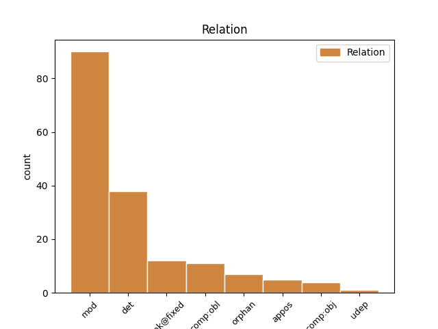
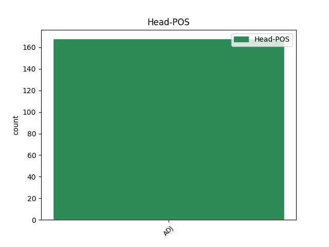
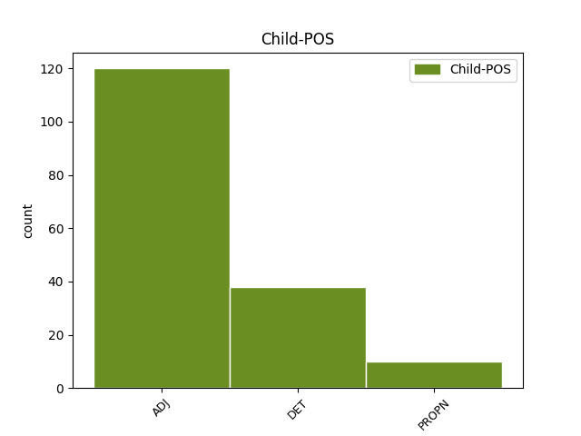

Distribution of features within this leaf



Agreement Rules sorted by frequency.
- When the dependent token is the modifer(mod) of the head token, and the head token is ADJ and the dependent token is ADJ.
1 ꙇ _ _ _ _ 0 _ _ _
2 аште _ _ _ _ 0 _ _ _
3 рекѫ _ _ _ _ 0 _ _ _
4 ѣко _ _ _ _ 0 _ _ _
5 не _ _ _ _ 0 _ _ _
6 вѣмь _ _ _ _ 0 _ _ _
7 его _ _ _ _ 0 _ _ _
8 бѫдѫ _ _ _ _ 0 _ _ _
9 подобенъ подобьнъ ADJ A- Case=Nom|Degree=Pos|Gender=Masc|Number=Sing|Strength=Strong 11 mod _ ref=JOHN_8.55
10 вамъ _ _ _ _ 0 _ _ _
11 лъжь лъжь ADJ A- Case=Nom|Degree=Pos|Gender=Masc|Number=Sing|Strength=Strong 0 _ _ _
1 нъ _ _ _ _ 0 _ _ _
2 си сь ADJ Pd Case=Acc|Gender=Neut|Number=Plur 0 _ _ _
3 вьсѣ вьсь DET Px Case=Acc|Gender=Neut|Number=Plur 2 det _ ref=JOHN_15.21
4 сътворѧтъ _ _ _ _ 0 _ _ _
5 вамъ _ _ _ _ 0 _ _ _
6 за _ _ _ _ 0 _ _ _
7 имѧ _ _ _ _ 0 _ _ _
8 мое _ _ _ _ 0 _ _ _
9 ѣко _ _ _ _ 0 _ _ _
10 не _ _ _ _ 0 _ _ _
11 вѣдѧтъ _ _ _ _ 0 _ _ _
12 посълавъшааго _ _ _ _ 0 _ _ _
13 мѧ _ _ _ _ 0 _ _ _
1 никꙑи никꙑиже ADJ Px Case=Nom|Gender=Masc|Number=Sing 0 _ _ _
2 же же ADJ Px Case=Nom|Gender=Masc|Number=Sing 1 unk@fixed _ ref=JOHN_8.10
3 ли _ _ _ _ 0 _ _ _
4 тебе _ _ _ _ 0 _ _ _
5 не _ _ _ _ 0 _ _ _
6 осѫди _ _ _ _ 0 _ _ _
1 большѧ болии ADJ A- Case=Gen|Degree=Cmp|Gender=Fem|Number=Sing|Strength=Strong 0 _ _ _
2 сеѩ сь ADJ Pd Case=Gen|Gender=Fem|Number=Sing 1 comp:obl _ ref=JOHN_15.13
3 любьве _ _ _ _ 0 _ _ _
4 никтоже _ _ _ _ 0 _ _ _
5 не _ _ _ _ 0 _ _ _
6 иматъ _ _ _ _ 0 _ _ _
7 да _ _ _ _ 0 _ _ _
8 кто _ _ _ _ 0 _ _ _
9 д҃шѫ _ _ _ _ 0 _ _ _
10 своѭ _ _ _ _ 0 _ _ _
11 положитъ _ _ _ _ 0 _ _ _
12 за _ _ _ _ 0 _ _ _
13 дроугꙑ _ _ _ _ 0 _ _ _
14 своѩ _ _ _ _ 0 _ _ _
1 ꙇ _ _ _ _ 0 _ _ _
2 егда _ _ _ _ 0 _ _ _
3 придѫ _ _ _ _ 0 _ _ _
4 на _ _ _ _ 0 _ _ _
5 мѣсто _ _ _ _ 0 _ _ _
6 нарицаемое _ _ _ _ 0 _ _ _
7 краниево _ _ _ _ 0 _ _ _
8 тоу _ _ _ _ 0 _ _ _
9 пропѧсѧ _ _ _ _ 0 _ _ _
10 и _ _ _ _ 0 _ _ _
11 ꙇ _ _ _ _ 0 _ _ _
12 зълодѣа _ _ _ _ 0 _ _ _
13 ового овъ ADJ Pd Case=Gen|Gender=Masc|Number=Sing 0 _ _ _
14 оубо _ _ _ _ 0 _ _ _
15 о _ _ _ _ 0 _ _ _
16 деснѫѭ _ _ _ _ 0 _ _ _
17 а _ _ _ _ 0 _ _ _
18 дроугааго дроугъ ADJ A- Case=Gen|Degree=Pos|Gender=Masc|Number=Sing|Strength=Weak 13 orphan _ ref=LUKE_23.33
19 о _ _ _ _ 0 _ _ _
20 шѫѭѫ _ _ _ _ 0 _ _ _
1 г҃ла _ _ _ _ 0 _ _ _
2 емоу _ _ _ _ 0 _ _ _
3 единъ ѥдинъ ADJ Px Case=Nom|Gender=Masc|Number=Sing 0 _ _ _
4 отъ _ _ _ _ 0 _ _ _
5 оученикъ _ _ _ _ 0 _ _ _
6 его _ _ _ _ 0 _ _ _
7 аньдрѣа аньдреи PROPN Ne Case=Nom|Gender=Masc|Number=Sing 3 appos _ ref=JOHN_6.8
8 братръ _ _ _ _ 0 _ _ _
9 симона _ _ _ _ 0 _ _ _
10 петра _ _ _ _ 0 _ _ _
1 дроуѕии дроугъ ADJ A- Case=Nom|Degree=Pos|Gender=Masc|Number=Plur|Strength=Weak 0 _ _ _
2 же _ _ _ _ 0 _ _ _
3 иеремиѭ҄ иѥремиꙗ PROPN Ne Case=Acc|Gender=Masc|Number=Sing 1 comp:obj _ ref=MATT_16.14
4 ли _ _ _ _ 0 _ _ _
5 единого _ _ _ _ 0 _ _ _
6 отъ _ _ _ _ 0 _ _ _
7 п҃ркъ _ _ _ _ 0 _ _ _
1 мѫжи _ _ _ _ 0 _ _ _
2 ниневьꙉитьстии _ _ _ _ 0 _ _ _
3 въстанѫтъ _ _ _ _ 0 _ _ _
4 на _ _ _ _ 0 _ _ _
5 сѫдъ _ _ _ _ 0 _ _ _
6 съ _ _ _ _ 0 _ _ _
7 родомь _ _ _ _ 0 _ _ _
8 симь _ _ _ _ 0 _ _ _
9 и _ _ _ _ 0 _ _ _
10 осѫдѧтъ _ _ _ _ 0 _ _ _
11 и _ _ _ _ 0 _ _ _
12 ѣко _ _ _ _ 0 _ _ _
13 покаашѧ _ _ _ _ 0 _ _ _
14 сѧ _ _ _ _ 0 _ _ _
15 проповѣдиѭ _ _ _ _ 0 _ _ _
16 иониноѭ҄ _ _ _ _ 0 _ _ _
17 ꙇ _ _ _ _ 0 _ _ _
18 се _ _ _ _ 0 _ _ _
19 болеи болии ADJ A- Case=Nom|Degree=Cmp|Gender=Masc|Number=Sing|Strength=Strong 0 _ _ _
20 ионꙑ иона PROPN Ne Case=Gen|Gender=Masc|Number=Sing 19 comp:obl _ ref=MATT_12.41
21 сьде _ _ _ _ 0 _ _ _
Disagree Examples:
1 ꙇ _ _ _ _ 0 _ _ _
2 пристѫпишѧ _ _ _ _ 0 _ _ _
3 къ _ _ _ _ 0 _ _ _
4 немоу _ _ _ _ 0 _ _ _
5 народи _ _ _ _ 0 _ _ _
6 мънози _ _ _ _ 0 _ _ _
7 ꙇмѫще _ _ _ _ 0 _ _ _
8 съ _ _ _ _ 0 _ _ _
9 собоѭ _ _ _ _ 0 _ _ _
10 хромꙑ _ _ _ _ 0 _ _ _
11 нѣмꙑ _ _ _ _ 0 _ _ _
12 и _ _ _ _ 0 _ _ _
13 слѣпꙑ _ _ _ _ 0 _ _ _
14 и _ _ _ _ 0 _ _ _
15 бѣсънꙑ _ _ _ _ 0 _ _ _
16 ꙇ _ _ _ _ 0 _ _ _
17 инꙑ инъ DET Px Case=Acc|Gender=Fem,Masc|Number=Plur 18 det _ ref=MATT_15.30
18 мъногꙑ мъногъ ADJ A- Case=Acc|Degree=Pos|Gender=Masc|Number=Plur|Strength=Strong 0 _ _ _
19 ꙇ _ _ _ _ 0 _ _ _
20 привръгѫ _ _ _ _ 0 _ _ _
21 ѩ _ _ _ _ 0 _ _ _
22 къ _ _ _ _ 0 _ _ _
23 ногама _ _ _ _ 0 _ _ _
24 и҃свама _ _ _ _ 0 _ _ _
1 и _ _ _ _ 0 _ _ _
2 исцѣли _ _ _ _ 0 _ _ _
3 ѩ _ _ _ _ 0 _ _ _
4 ѣко _ _ _ _ 0 _ _ _
5 народоу _ _ _ _ 0 _ _ _
6 дивити _ _ _ _ 0 _ _ _
7 сѧ _ _ _ _ 0 _ _ _
8 видѧще _ _ _ _ 0 _ _ _
9 нѣмꙑ _ _ _ _ 0 _ _ _
10 г҃лѭштѧ _ _ _ _ 0 _ _ _
11 бѣдънꙑѩ бѣдьнъ ADJ A- Case=Acc|Degree=Pos|Gender=Masc|Number=Plur|Strength=Weak 12 comp:obj _ ref=MATT_15.31
12 съдравꙑ съдравъ ADJ A- Case=Acc|Degree=Pos|Gender=Fem,Masc|Number=Plur|Strength=Strong 0 _ _ _
13 ꙇ _ _ _ _ 0 _ _ _
14 хромꙑѩ _ _ _ _ 0 _ _ _
15 ходѧштѧ _ _ _ _ 0 _ _ _
16 слѣпꙑѩ _ _ _ _ 0 _ _ _
17 видѧштѧ _ _ _ _ 0 _ _ _
1 еже _ _ _ _ 0 _ _ _
2 не _ _ _ _ 0 _ _ _
3 оубьеши _ _ _ _ 0 _ _ _
4 не _ _ _ _ 0 _ _ _
5 прѣлюбꙑ _ _ _ _ 0 _ _ _
6 сътвориши _ _ _ _ 0 _ _ _
7 не _ _ _ _ 0 _ _ _
8 оукрадеши _ _ _ _ 0 _ _ _
9 не _ _ _ _ 0 _ _ _
10 лъжесъвѣдѣтель _ _ _ _ 0 _ _ _
11 бѫдеши _ _ _ _ 0 _ _ _
12 чьти _ _ _ _ 0 _ _ _
13 о҃тца _ _ _ _ 0 _ _ _
14 и _ _ _ _ 0 _ _ _
15 матерь _ _ _ _ 0 _ _ _
16 ꙇ _ _ _ _ 0 _ _ _
17 възлюбиши _ _ _ _ 0 _ _ _
18 искрьнѣаго искрьнии ADJ A- Case=Gen|Degree=Pos|Gender=Masc|Number=Sing|Strength=Weak 0 _ _ _
19 своего свои ADJ Pt Case=Gen|Gender=Masc,Neut|Number=Sing|Person=3|Poss=Yes|Reflex=Yes 18 mod _ ref=MATT_19.19
20 ѣко _ _ _ _ 0 _ _ _
21 самъ _ _ _ _ 0 _ _ _
22 сѧ _ _ _ _ 0 _ _ _
1 хоштѫ _ _ _ _ 0 _ _ _
2 же _ _ _ _ 0 _ _ _
3 семоу сь DET Pd Case=Dat|Gender=Masc,Neut|Number=Sing 4 det _ ref=MATT_20.14
4 послѣдьнюмоу послѣдьнии ADJ A- Case=Dat|Degree=Pos|Gender=Masc|Number=Sing|Strength=Weak 0 _ _ _
5 дати _ _ _ _ 0 _ _ _
6 ѣко _ _ _ _ 0 _ _ _
7 и _ _ _ _ 0 _ _ _
8 тебѣ _ _ _ _ 0 _ _ _
1 не _ _ _ _ 0 _ _ _
2 повиненъ _ _ _ _ 0 _ _ _
3 есмъ _ _ _ _ 0 _ _ _
4 отъ _ _ _ _ 0 _ _ _
5 кръве _ _ _ _ 0 _ _ _
6 сего сь DET Pd Case=Gen|Gender=Masc,Neut|Number=Sing 7 det _ ref=MATT_27.24
7 праведънааго правьдьнъ ADJ A- Case=Gen|Degree=Pos|Gender=Masc|Number=Sing|Strength=Weak 0 _ _ _